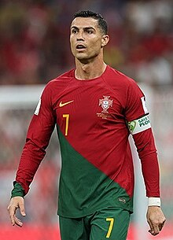

Cristiano Ronaldo dos Santos Aveiro (talaffuzi: Krishtianu Ronaldu dush Santus Aveyru) — 1985-yilning 5-fevralida tugʻilgan, Al-Nassr FK futbol klubi va Portugaliya milliy futbol jamoasi uchun oʻynaydigan professional futbolchi. Futbol tarixidagi eng qimmat futbolchilardan biri. Uning Manchester United futbol klubidan Real Madrid oʻtishi 83 million funt sterlingga tushgan. Bugungi kunning eng yaxshi futbolchilaridan biri hisoblanadi.[7][8][9][10]
2011-yilda Ronaldo Real Madrid tarkibida mavsumni 53 ta gol bilan yakunlab, klub tarixidagi bir mavsumda eng koʻp gol urgan futbolchi boʻldi. Oltin butsa yutib, ikki turli chempionatda bu mukofotni qoʻlga kiritgan birinchi sportchi boʻldi.
Tarjimai holi
Cristiano Ronaldo Potugaliyaning Madeyra, Funshal shahrida tugʻilgan. Onasi — Maria Dolores dos Santos Aveiro, otasi — José Dinis Aveiro. Ota-onasi uning ismini AQSH prezidenti Ronald Reagan sharafiga qoʻyganlar, chunki u otasining eng sevimli aktyori boʻlgan[11].
Dastlabki karyerasi
U uch yoshidan futbol oʻynaydi va olti yoshida boshlangʻich maktabga chiqqanida uning sportga boʻlgan muhabbati yaqqol koʻrina boshlanadi. Uning sevimli oʻsmirlar jamoasi Benfika klubi boʻlgan, lekin shunga qaramay keyinroq ularning raqibi Sportingga qoʻshiladi. 8 yoshida u otasi murabbiy boʻlgan Andorinha jamoasi uchun toʻp suradi, 1995-yili, atigi oʻn yoshida Cristianu Ronaldoning shuhrati butun Portugaliya boʻylab tarqaladi. Madeyraning ikki yetakchi jamoalari, Marítimo va Nacional u bilan shartnoma tuzishga qiziqib qoladilar. Kattaroq jamoa boʻlgan Maritimo, Andorinhaning menejeri Rui Santos bilan hal qiluvchi uchrashuvni qoʻldan boy beradi va natijada Ronaldo Nacionalga qoʻshiladi. Nacionaldagi yutuqlaridan soʻng Ronaldo Lissabonga otlanib uch kun vaqtinchalik Sportingda oʻynaydi va natijada Sportingda qoladi[12].
Bosh menyu